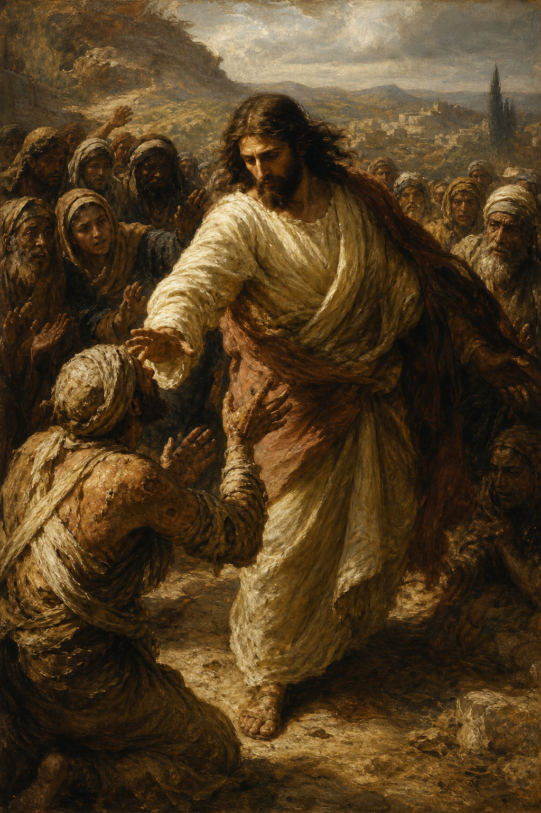

New Testament · Book 2 of 27
Mark
The shortest, fastest-moving Gospel: a breathless account of a Servant-King who is always on the move, driving relentlessly toward the cross.
Mark's Gospel moves at a sprint. The word "immediately" appears dozens of times as Jesus goes from miracle to miracle, confrontation to confrontation, with almost no pause for genealogies or long discourses — here is a Servant who came not to be served, but to serve, and to give his life as a ransom for many.
For even the Son of man came not to be ministered unto, but to minister, and to give his life a ransom for many.
What happens in Mark
Mark opens with no birth narrative at all — the Gospel begins mid-stride with John the Baptist, Jesus' baptism, and his immediate plunge into ministry in Galilee. Mark crowds the first half of his account with a rapid sequence of miracles: demons cast out, the sick healed, a storm calmed, the dead raised, thousands fed from a few loaves, all while the religious leaders grow increasingly hostile and even Jesus' own disciples repeatedly fail to understand who he really is. At Caesarea Philippi the turning point arrives: Peter confesses Jesus as the Christ, and from that moment the narrative pivots hard toward Jerusalem and the cross, with Jesus three times predicting his own suffering, death, and resurrection, each time met with the disciples' confusion or ambition rather than comprehension. The final chapters move through the triumphal entry, the cleansing of the temple, mounting conflict with the authorities, the Last Supper, Gethsemane, betrayal, an unjust trial, and the crucifixion, narrated with stark, unflinching economy. The Gospel closes at the empty tomb, where frightened women flee in silence — the earliest manuscripts end Mark's account on that unsettling, open note of fear and wonder before the risen Christ commissions his followers to carry the gospel into all the world.
Why it matters
Mark is widely believed to be the earliest Gospel written and a primary source for both Matthew and Luke, making it a foundational witness to the life of Jesus. Its portrait of Christ as the suffering Servant who serves rather than demands service reframes power itself, and its unflinching honesty about the disciples' repeated failures offers unusual comfort: those closest to Jesus often misunderstood him completely, and were loved and used by him still.
Jump to a chapter
Mark has 16 chapters — select one to begin reading there.